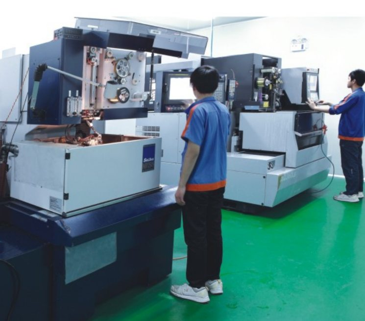

Technical Blog
What is Wire EDM?
A practical guide for purchasing managers, mechanical engineers and quality engineers evaluating wire EDM for hard materials, complex profiles and precision tooling.

Overview
Wire EDM, also called wire electrical discharge machining or wire cutting, is a precision machining process that removes material by controlled electrical discharge between a thin wire electrode and a conductive workpiece. The wire does not cut like a mechanical saw. Instead, sparks erode the material along a programmed path while the machine controls wire tension, flushing, power settings and motion accuracy. This makes wire EDM valuable for hardened steels, tungsten carbide, precision mold inserts, connector tooling and components that would be difficult to machine with conventional cutting tools.
When Buyers Choose Wire EDM
Industrial buyers often consider wire EDM when a drawing includes small inside radii, narrow slots, delicate contours or high accuracy after heat treatment. Because the process does not rely on cutting force, it can produce shapes in hard materials that may distort or break under milling pressure. For precision mold components, wire EDM is often used after rough machining and heat treatment, helping maintain dimensional stability while creating the final profile. This is one reason wire EDM is widely used in mold manufacturing, connector tooling, precision stamping and automation fixture applications.
Process Variables and Planning
The main variables in wire EDM include wire diameter, material thickness, flushing condition, machine type, number of skim cuts and required surface finish. A smaller wire can make smaller internal radii, but it may cut more slowly and can be more sensitive to stability. Oil wire EDM is often selected when finer cutting conditions or higher accuracy are required. Water wire EDM is widely used for general precision cutting. A good supplier reviews these details before quoting, because the process route directly affects lead time, cost and achievable tolerance.
Drawing and RFQ Requirements
For purchasing managers, the most important RFQ documents are a 2D drawing with tolerances and a 3D model when available. The drawing should identify critical dimensions, datum references, surface requirements, material grade and quantity. If the part is used in a mold or assembly, it is helpful to explain the function of the critical features. This allows the machining supplier to decide whether wire EDM alone is sufficient or whether grinding, EDM, inspection and deburring steps should be added.
Suitable Materials
Wire EDM can support many conductive materials, including tool steels, stainless steels, tungsten carbide and selected mold materials. The material must be electrically conductive. Ceramics generally require other machining methods unless they are special conductive ceramics. For carbide and hardened steel parts, wire EDM can reduce the risk associated with mechanical cutting forces, but the supplier still needs to review edge condition, heat-affected surface expectations and post-processing requirements.
Equipment and Supplier Capability
When comparing suppliers, international buyers should ask about equipment, inspection methods, wire diameter range, experience with small radii and export communication. Jinyi Precision supports wire EDM parts with Seibu and AgieCharmilles equipment, plus oil wire EDM capability. The company also combines wire EDM with PG grinding, mirror EDM and precision inspection when a component requires multiple processes. This integrated process view is especially useful for mold inserts and connector components.
Tolerance Review
Tolerance should always be discussed with the drawing in hand. A supplier may list a reference tolerance such as ±0.001mm for oil wire EDM or ±0.002mm for certain wire cutting work, but actual tolerance depends on material, thickness, feature geometry and measuring method. Buyers should avoid assuming that one advertised number applies to every feature. The correct approach is to mark critical dimensions and ask the supplier to confirm achievable tolerance for those specific areas.
When Wire EDM Is Not the Best Choice
Wire EDM is not always the best choice. If a component is soft, simple and has open geometry, CNC milling may be faster and more economical. If the part requires complex 3D surfaces, CNC machining or grinding may be more appropriate. Wire EDM becomes more attractive when the material is hard, the profile is complex, internal corners are small or post-heat-treatment accuracy matters. For many mold and connector tooling parts, it is part of a combined process rather than a stand-alone solution.
Quality Control and Inspection
Quality control for wire EDM parts usually includes dimensional inspection by projector, height gauge, microscope, CMM or other measuring tools depending on the drawing. The supplier should confirm datum setup and inspection method before production. This reduces disagreement after delivery, especially for overseas projects where shipping time makes rework expensive. Clear inspection expectations are a practical part of international B2B sourcing.
Cost and Lead Time
Wire EDM cost and lead time depend on material thickness, total cutting length, wire diameter, flushing conditions, the number of skim cuts and the amount of inspection required. Tight profiles in thick carbide or hardened steel generally take longer than open profiles in thinner workpieces. Buyers can improve quotation accuracy by identifying critical dimensions separately from general tolerances and by confirming whether surface finish, edge condition or inspection reports are required. This allows the supplier to plan the cutting sequence and avoid unnecessary processing.
Conclusion
In summary, wire EDM is a practical option for conductive components that require complex profiles, hard materials, small radii or dimensional control after heat treatment. Buyers should prepare complete drawings, identify critical features and discuss material, tolerance, edge condition and lead time early. When several processes are required, the machining and inspection sequence should be agreed before production.
Production Readiness Checklist
Before releasing a wire EDM order, confirm the workpiece condition and the features that control setup. The supplier should know whether the material has already been heat treated, whether grinding stock remains on any datum surface and whether starter holes are required for closed contours. The drawing should distinguish finished dimensions from dimensions that will be completed by a later grinding or EDM operation.
Inspection planning should be agreed at the same time. Identify the datum orientation, the dimensions that require optical comparison and any features that need a height gauge, microscope or coordinate measurement. Surface finish, recast-layer expectations, edge breaks and burr requirements should be stated when they affect assembly or tool life. For repeat orders, provide the drawing revision and note whether replacement components must remain interchangeable with an earlier batch. These checks help both parties evaluate the same acceptance criteria before cutting begins.
Need Help With a Precision Component?
For a wire EDM feasibility review, send the dimensioned drawing, material grade, quantity and critical tolerance requirements. The review can then address wire diameter, datum strategy, cutting sequence, inspection method and any required secondary grinding or EDM work.
RFQ Request
Send drawings for review
Please include material, quantity, tolerance, surface requirement and target delivery date in the form. Please send PDF, STEP, STP, DWG or DXF drawings by Email or WhatsApp after submitting the RFQ form.